Είναι ένα σύστημα που επιτρέπει την καταγραφή της θέσης ενος πιλότου κατα την διάρκεια της πτήσης σε server στο internet ώστε να μπορούν όλοι να δούν την πτήση του την στιγμή που πραγματοποιείται !
Αρκεί ο πιλότος να έχει ένα συμβατό με την υπηρεσία κινητό τηλέφωνο και bluetooth gps
Τα παρακάτω Symbian OS Series 60 κινητά
Nokia 3250 3600 3620 3650 3660 6260 6600 6620 6630 6670 6680 6681 6682 7610 7650
Nokia N-Gage N-Gage QD
Nokia E60 E61 E70 N70 N80 N90 N91 N92
Έχουν δοκιμαστεί:
Λογικά οποιοδήποτε bluetooth GPS μπορεί να χρησιμοποιηθεί
Έχουν δοκιμαστεί:
Τα μεταχειρισμένα 6600 κυμαίνονται στα 100 €
Τα μεταχειρισμένα 6680 κυμαίνονται στα 150 €
Ένα καινούργιο GPS BT-338 κοστίζει περίπου 90 ευρώ.
Η αποστολη της θέσης του πιλότου γίνεται μέσω GPRS. Η χρέωση του GPRS με τίμες Vodafone στο απλό (πιο ακριβό) πακέτο δίνεται στον παρακάτω πίνακα ανάλογα με το διάστημα που θα επιλέξει ο πιλότος να καταγράφεται το στίγμα του GPS.
ΔΕΝ υπάρχει καμοία άλλη χρέωση
ΚΟΣΤΟΣ (συμπεριλαμβάνεται ΦΠΑ) |
|||
| Διάστημα | 1 ώρα |
2 ώρες |
3 ώρες |
| 5 sec | 0,6371 € |
1,2742 € |
1,9113 € |
| 10 sec | 0,3185 € |
0,6371 € |
0,9556 € |
| 20 sec | 0,1592 € |
0,3185 € |
0,4778 € |
| 30 sec | 0,1061 € |
0,2123 € |
0,3185 € |
| 40 sec | 0,0796 € |
0,1592 € |
0,2389 € |
| 60 sec | 0,0530 € |
0,1061 € |
0,1592 € |
ΣΗΜΑΝΤΙΚΟ: το πρόγραμμα που χρησιμοποιούμε έχει ενα πρόβλημα: όταν τρέξει διαγράφει όλα τα εισερχόμενα SMS που δεν έχουμε αποθηκέυσει σε άλλους φάκελους!!! Προσοχή λοιπόν, πριν το τρέξετε πρέπει να μετακίνήσετε όλα τα SMS που έχετε σε αλλο φάκελο απο τα εισερχόμενα.
Πρώτα απο όλα πρέπει να έχουμε μια σύνδεση GPRS που να λειτουργεί. Η σύνδεση GPRS δεν χρεώνεται με πάγιο αλλά χρεωνόμαστε ανάλογα με τα Kbytes δεδομενων που θα "κατεβάσουμε" απο το Internet. Η χρέωση της Vodafone (15/11/2006) στο απλό πακέτο σύνδεσης είναι 0,006 € / Kb που για τους σκοπούς μας είναι πολύ μα πολύ φτηνό (βλ πίνακα "κόστος").
Αν ήδη έχετε δει σελίδες web απο το κινητό σας το πιο πιθανόν είναι οτι έχετε ήδη σωστά ρυθμισμένο το GPRS σας. Συνήθως υπάρχουν 3 συνδέσεις και όταν πάτε να δείτε σελίδες σας ζητάει να επιλέξετε αναμεσα τους. Τυπικά τα ονοματα τους είναι
Αυτό που χρειαζόμαστε είναι το 3ο δηλαδή ΟΧΙ "MMS" και ΟΧΙ "WAP".
Αν υπάρχει αμβιφολία ή δεν λειτουργεί όπως πρέπει ανατρέξτε στην "δημιουργία GPRS σύνδεσης" παρακάτω.
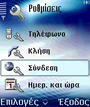 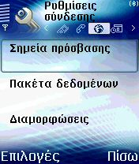 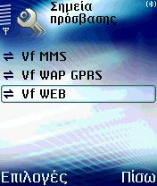
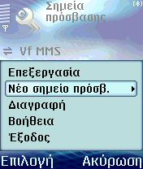 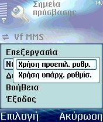
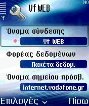 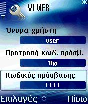 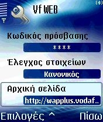 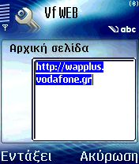
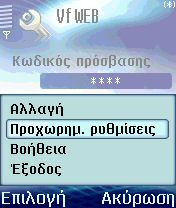 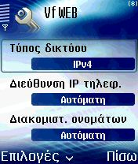 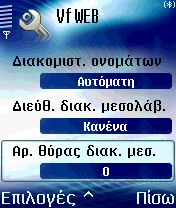
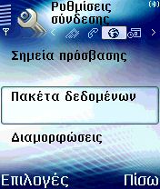 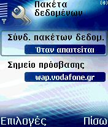
Σημείωση: το κινητό όταν "μιλάει" με το GPS και το internet "τρώει" πολύ γρήγορα την μπαταρία. Φροντίστε να είναι πλήρως φορτισμένη.
Το ζουμί της ιστορίας λοιπόν!!!
http://pgforum.thenet.gr/modules/leonardo/leo_live_list.php